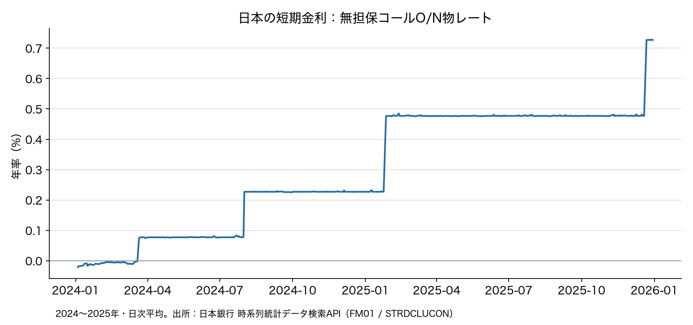
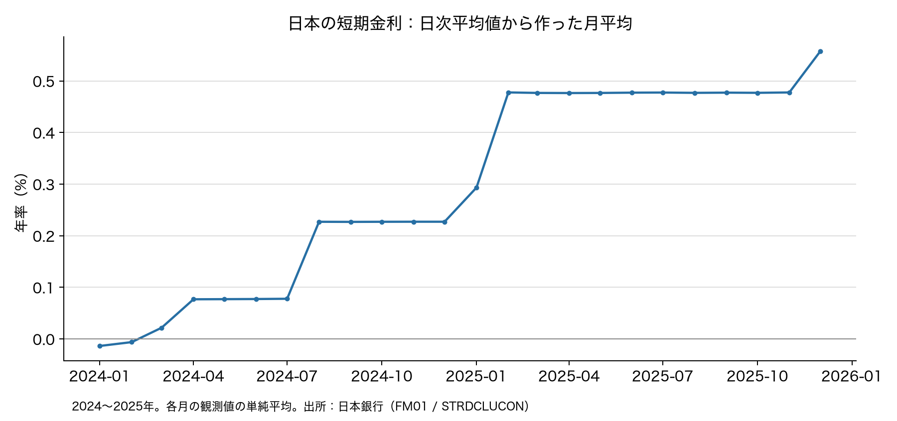

系列の検索、JSONから表への変換、短期金利の日次グラフと月平均
金融論
日本銀行のAPIから、2024〜2025年の無担保コールO/N物レートを取得します。日次の折れ線グラフを作り、同じデータから月平均も計算します。
FREDでは複数の機関が作った統計を取得しました。ここでは、統計を公表する日本銀行から直接取得します。取得後は、pandasで日付と値の表にして、Matplotlibで図を描く流れです。
日本銀行の時系列統計データ検索サイトでは、金利、為替、マネーストック、企業物価、短観、資金循環などを公開しています。APIでも検索サイトの時系列データを取得できます。ユーザー登録やAPIキーは不要です。
APIは、2026年2月18日に提供が始まりました。取得する系列や期間をURLに付けると、JSONやCSVが返ります。
| 使い方 | API | 指定するもの |
|---|---|---|
| 系列コードで時系列を取得する | getDataCode |
データベース、系列コード、期間 |
| 分類をたどって時系列を取得する | getDataLayer |
データベース、分類の階層、期間 |
| 系列名などの属性を調べる | getMetadata |
データベース |
この資料では、系列コードが分かっている場合の getDataCode
を使います。APIの仕様は公式マニュアルにまとまっています。
無担保コールO/N物レートは、金融機関が無担保で翌日まで資金を貸し借りするときの金利です。この例では、市場で成立した金利の日次平均を使います。
| 項目 | この例で使う値 |
|---|---|
| データベース | FM01 |
| 系列コード | STRDCLUCON |
| 系列名 | 無担保コールO/N物レート・平均値 |
| 頻度 | 日次 |
| 単位 | 年率% |
| 取得期間 | 2024年1月〜2025年12月 |
別の系列を探すときは、検索サイトの「系列名称検索」で「コールレート」などの言葉を入れます。表示された系列名、頻度、単位、収録期間を見て、目的に合う系列を選びます。検索サイトでは
FM01'STRDCLUCON
のようにデータベースと系列コードが一緒に表示されます。APIでは、この2つを別々に指定します。
この例の取得先は、次のURLです。ブラウザでも返答を確認できます。
https://www.stat-search.boj.or.jp/api/v1/getDataCode?db=FM01&code=STRDCLUCON&startDate=202401&endDate=202512? の後が取得条件です。db
はデータベース、code は系列コード、startDate
と endDate は期間です。条件どうしは &
でつながっています。日次系列でも、取得期間は 202401
のように年月で指定します。
Pythonでは、条件を辞書にまとめてURLを作れます。
from urllib.parse import urlencode
params = {
"db": "FM01",
"code": "STRDCLUCON",
"startDate": "202401",
"endDate": "202512",
}
url = "https://www.stat-search.boj.or.jp/api/v1/getDataCode?" + urlencode(params)返答には、取得結果の状態、系列の情報、日付と値が入っています。保存した返答の冒頭から必要な項目を抜き出すと、次のようになります。
{
"STATUS": 200,
"RESULTSET": [{
"SERIES_CODE": "STRDCLUCON",
"NAME_OF_TIME_SERIES_J": "無担保コールＯ／Ｎ物レート／平均値 日次／金利",
"UNIT_J": "年％",
"FREQUENCY": "DAILY",
"VALUES": {
"SURVEY_DATES": [20240101, 20240102, 20240103, 20240104],
"VALUES": [null, null, null, -0.021]
}
}]
}RESULTSET は系列のリストです。最初の系列は
[0] で取り出せます。その中の SURVEY_DATES と
VALUES
は同じ順番で対応しています。2024年1月4日の金利は−0.021%です。
保存済みの返答を読み込む例です。以下のコードは、作例フォルダを作業場所にして実行します。
import json
from pathlib import Path
import pandas as pd
response = json.loads(Path("raw/call_rate.json").read_text(encoding="utf-8"))
series = response["RESULTSET"][0]
values = series["VALUES"]
df = pd.DataFrame({
"date": pd.to_datetime([str(date) for date in values["SURVEY_DATES"]], format="%Y%m%d"),
"rate_pct": values["VALUES"],
})
print(df.head())JSONの null
は、数値の列ではpandasの欠損になります。この返答には731暦日が入り、観測値があるのは488日です。元の表では休日などの欠損を残し、作図では観測値のある日を結びます。
import matplotlib.pyplot as plt
observed = df.dropna(subset=["rate_pct"])
fig, ax = plt.subplots(figsize=(10, 4.7))
ax.plot(observed["date"], observed["rate_pct"])
ax.axhline(0, color="gray", linewidth=0.8)
ax.set(title="Japan: overnight call rate, 2024–2025",
xlabel="Date", ylabel="Annual rate (%)")
plt.show()
2024年1月4日は−0.021%、2025年12月30日は0.727%です。マイナスの金利からプラスへ移り、段階的に上昇した様子が分かります。両日の差は0.748%ポイントです。金利の水準どうしの差なので、%ポイントで表します。
日次データを月ごとにまとめると、長い期間の動きを追いやすくなります。各月の観測値の単純平均を計算し、平均に使った日数も残します。
monthly = df.set_index("date")["rate_pct"].resample("MS").agg(["mean", "count"])
monthly = monthly.rename(columns={"mean": "mean_rate_pct", "count": "observations"})
print(monthly.head())set_index("date")
は日付を表の索引にします。resample("MS")
は月ごとにまとめ、各月の初日をラベルにします。mean
は欠損を除いた平均、count
は値のある日数です。月平均にしても、金利の単位は年率%のままです。

金融論/Lecture10/boj_rate/ に、日銀APIから無担保コールO/N物レートを取得して図にするPythonプログラムを作って。
getDataCodeを使い、dbはFM01、codeはSTRDCLUCONにして。
2024年1月から2025年12月までを取得し、系列名・単位・頻度を確認して。
日付と金利を表にし、休日などのnullは欠損として残して。
観測値のある日を結んだ日次グラフと、各月の観測値の単純平均を使った月次グラフを作って。
元のJSON、取得条件と日時、日次と月次のCSV、2枚の図を保存して。
保存済みの応答があれば、それを使って再実行できるようにして。実行できる作例と使い方があります。配布する
example/boj/ の中身を
金融論/Lecture10/boj_rate/
に置くと、プログラムとデータがそろいます。プログラムは自分のファイルがある場所を基準に、raw/
を読み、data/ と figures/ に保存します。
| ファイル | 内容 |
|---|---|
| data/call_rate.csv | 日付と日次金利 |
| data/call_rate_monthly.csv | 月平均と平均に使った日数 |
| raw/call_rate.json | APIから返ったJSON |
| raw/request.json | 取得先・取得条件・取得日時 |
| settings.md | 系列の情報と計算結果 |
図の期間や見た目を変えるときは、保存済みのデータを使えます。
APIに再アクセスせず、保存した日銀のデータから2枚の図を作り直して。
日次データが731行、観測値が488個あることと、月平均が24か月分あることを確認して。作例のデータ取得日は2026年11月4日です。APIの説明は2026年11月14日に公式資料で確認しました。